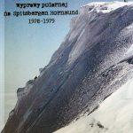
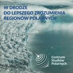

Na przełomie 2018 i 2019 ukazało się kilka ciekawych książek, które zapewne zainteresują kolekcjonerów publikacji polarnych:

{kind=link}
Kierownik Jan Szupryczyński wspomina największą polską wyprawę polarną na Spitsbergen, w której łącznie udział brało 157 osób.
Publikacja została sfnansowana ze środków projakościowych Krajowego Naukowego Ośrodka Wiodącego (KNOW) otrzymanych przez Centrum Studiów Polarnych na lata 2014–2018
„CV bez cenzury” – Stanisław Rakusa Suszczewski
{kind=link}
Książka przedstawia losy autora od czasów młodzieńczych, po okres jego działalności polarnej aż do dzisiaj. Stanisław Rakusa Suszczewski wspomina między innymi Spitsbergen, Antarktykę oraz wielu poznanych tam przyjaciół i znajomych. Ciekawostką są także jego przemyślenia co do współczesnego kierunku rozwoju badań polarnych.
Wydawca Polska Akademia Nauk Archiwum w Warszawie
Książkę wydano dzięki pomocy finansowej firmy NAVIGA Krzysztofa Makowskiego.

„W DRODZE DO LEPSZEGO ZROZUMIENIA REGIONÓW POLARNYCH” – Piotr Głowacki, Dariusz Ignatiuk, Jacek Jania, Elżbieta Łepkowska
{kind=link}
W książce opisano profil działań „Centrum Studiów Polarnych” oraz specyfikę jego działalności. W publikacji znajdziemy dużo informacji o ludziach związanych inicjatywą „Centrum” oraz przykłady zrealizowanych prac naukowych.
Wydanie sfniansowane ze środków projakościowych Krajowego Naukowego Ośrodka Wiodącego (KNOW) otrzymanych przez Centrum Studiów Polarnych na lata 2014–2018